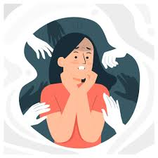
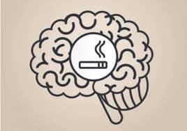

TRATAMIENTO
-
Terapia Sustitutiva de Nicotina (TSN): Uso de parches, chicles o caramelos para reducir el síndrome de abstinencia.

- Tratamiento Farmacológico: Medicamentos (como Vareniclina o Bupropión) que bloquean la necesidad de fumar, siempre bajo receta médica.

- Terapia Cognitivo-Conductual: Apoyo psicológico para cambiar los hábitos y manejar los disparadores de ansiedad.

- Reduce la ansiedad y el placer de fumar al actuar sobre los receptores de nicotina en el cerebro.

- Proporciona nicotina sin las toxinas del humo. Incluye parches (acción prolongada), chicles, rociadores nasales o pastillas.
- Tratamientos Farmacológicos (Adicción Física)
Estos medicamentos reducen el deseo intenso y los síntomas de abstinencia:
- Vareniclina (Chantix): Reduce la ansiedad y el placer de fumar al actuar sobre los receptores de nicotina en el cerebro.

- Terapia de Reemplazo de Nicotina (TRN): Proporciona nicotina sin las toxinas del humo. Incluye parches (acción prolongada), chicles, rociadores nasales o pastillas.

- Bupropión (Wellbutrin): Antidepresivo que ayuda a reducir la adicción a la nicotina.

- Combinación: El uso combinado de TRN de acción prolongada (parche) y rápida (chicle/spray) es muy eficaz.
- Entrevistas Motivacionales: Aumentan la motivación personal para dejarlo.
- Apoyo: Grupos de apoyo, líneas telefónicas de ayuda (quitlines) y aplicaciones móviles.